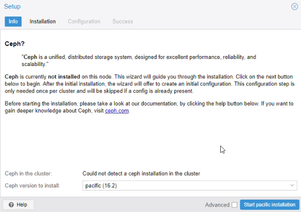

Serveur Proxmox
Objectif et environnement
Objectif
Installation et configuration d’un cluster Proxmox avec trois serveurs en haute disponibilité sur serveurs. Tolérance de panne d’un serveur.
Environnement
Matériels :
3 x Dell PowerEdge r240 avec Proxmox 7.1-7
Adressage des VMS :
Réseau interne : 172.16.0.0/16
IP internes : 172.28.1.250, 172.28.1.250, 172.28.1.250
Réseau externe : 192.168.10.xx/26 (en DHCP fournie par le PEI)
Documentation :
Configuration préalable
Avertissement
Nous allons utiliser des disques formattés en Ceph pour la haut disponibilité. Ces disques doivent être non RAID ou RAID0 à 1 disque, sinon Ceph ne pourra pas s’installer.
Processus
Création d’un Cluster
Nous avons créé un cluster sur le 1er serveur (172.28.1.250/16) :
Nommé le cluster puis create :
Le cluster a été correctement créé :
Une fois le cluster créé, nous avons copié join information (clé d’agrégation)
Sur le 2e serveur (pve2 : 172.28.1.251/16)
Menu Cluster > Joindre le cluster
Le serveur est bien arrivé sur le cluster. Nous avons fait la même manipulation pour le 3e serveur (172.28.1.252/16).
Installation Ceph
Installation Ceph sur les serveurs
Menu > Ceph

Nous avons installé Ceph sur les deux autres serveurs également.
Ajout des Monitors et Managers
Cette fonctionnalité donne des droits pour afficher et manager les différents serveurs Proxmox.
Menu > Ceph > Monitor


Création d’un pool de stockage
Menu Ceph > OSD > Create OSD
Nous avons effectué la même manipulation sur les deux autres serveurs.
Création d’un pool
Menu > Ceph > Pools
Ceph stockage a été créé.
Mise en place de la haute disponibilité (HA)
Menu > HA > Groups
Test de la migration d’une VM
Nous avons créé un conteneur test sur le pve1
Nous avons ajouté le conteneur dans la haute disponibilité pve1-ha
Nous avons arrêté le pve1.
Le conteneur est bien arrivé sur le pv3. Par la suite nous avons rallumé pve1.
Le conteneur est retourné automatiquement sur pve1(3 min après avoir démarré pv1).
Test de la haute disponibilité lors d’une coupure d’un serveur
Nous avons lancé une copie d’un fichier volumineux à partir de la partition D:\ du l’AD sur le pve1 vers un dossier partage se trouvant sur le serveur SAMBA sur le pve3.
En paralelle, nous avons lancé un ping continue depuis CLI-DEB-01 sur pve3 vers www.google.com. Le client accède à l’internet via FW-PROXY se trouvant sur le pve1.
NB : chaque VM possède un snapshot avec sa dernière bonne configuration. Lors d’une migration, la VM bascule avec son snapshot !
Configuration des groupes HA
Ajout des ressources pour effectuer le test
Etape1
Les VM sont arrivées sur le pve3
Nous avons rejoué la séquence en rebranchent le pve1
Etape2
Les VM AD et PROXY sont en état migrate
Pendant la copie la migration du l’AD n’a pas été effective.
Etape 3
Pf a basculé complètement sans aucune coupure

Etape 4
Fin de la copie du fichier depuis l’AD vers le partage SAMBA.
Pendant la migration l’AD continue fournir des services, notamment la résolution DNS. L’AD est toujours 100% fonctionnel.
Etape 5
La migration du l’AD est effective
Suppression d’un cluster
systemctl stop corosync pve-cluster
pmxcfs -l
rm -rf /etc/corosync/\*
rm -rf /etc/pve/corosync.conf
killall pmxcfs
systemctl start pve-cluster
Conclusion
La mise en place d’un cluster est terminée. Les images concernées par la haute disponibilité doivent être crées sur la partition répliquée prévue à cette effet(ceph-stockage).
Sur Proxmox il y a une différence notable entre migration voulu ou depuis et vers un serveur actif et migration automatique suite d’une panne. Dans le premier cas (reprise d’activités), nous n’avons pas constaté de coupure de service. La migration est plus lente. Lors de la simulation d’une panne la migration est automatique avec des coupures de service, néanmoins la migration est plus rapide.